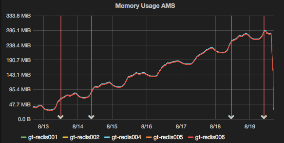

Safely running bulk operations on Redis with lua scripts
If there was one golden rule when working with redis in production, it would be
"Don't use KEYS"The reason for this is that it blocks the redis event loop until it completes, i.e. while it's busy scanning its entire keyspace, it can't serve any other clients.
Recently, we had a situation where code was storing keys in redis without setting an expiry time, with the result that our keyspace started to grow:

Now 250Mb isn't a lot of data, but it still represents about a million keys to expire, and it made sense to clean it out given that our normal daily cycle was about 30-50Mb.
Once we released a code fix on the 19th, the keyspace stopped growing, but because the keys had no TTL set, we would never get the memory back unless we flushed the entire database, or expired them manually.
Obviously, we preferred the latter option.
Knowing that you shouldn't use KEYS (did I mention you shouldn't use KEYS?), my first attempt used the SCAN command to obtain a list of keys and iterated over them with the EXPIRE command. I started with a script from this stackoverflow post, and modified it because the output didn't seem to be what it was expecting.
The result, was this script:
#!/bin/bash
if [ $# -ne 3 ]
then
echo "Expire keys from Redis matching a pattern using SCAN & EXPIRE"
echo "Usage: $0 <host> <port> <pattern>"
exit 1
fi
cursor=-1
keys=""
while [ $cursor -ne 0 ]; do
if [ $cursor -eq -1 ]
then
cursor=0
fi
reply=$(redis-cli -h $1 -p $2 SCAN $cursor MATCH $3)
cursor=$(expr "$reply" : '\([0-9]*[0-9 ]\)')
keys=$(echo $reply | awk '{for (i=2; i<NF; i++) print $i}')
[ -z "$keys" ] && continue
for key in $keys; do
redis-cli -h $1 -p $2 EXPIRE $key 60
done
done
The SCAN command returns a cursor, followed by a list of keys. Or it might return no keys at all. So the script has to separate the keys and cursor from the output (lines 19-22). For each key, we run an expire command (lines 25-27).
After the first set of keys, we return to the start of the loop and call the scan command again, this time using the cursor that was returned last time. In this way, Redis knows where you were up to and carries on where it left off.
Redis returns a cursor of 0 when it has iterated over all keys, so when this happens the while loop ends.
It's a bit slow...
While it worked well, it processed at a rate of about 100 keys per second. With a very small database, this might be fine, and left to its own devices, it would have taken just under 3 hours in our case. I figured we could do better.
Redis supports server-side scripting in the lua language. Lua is not a language I've used much before, but its syntax seems fairly logical.
To call a server-side script, you basically pass it to the redis EVAL command, along with the number of keys, the keys themselves, and any other arguments. A basic example (stolen from the redis documentation), looks like:
> eval "return {KEYS[1],KEYS[2],ARGV[1],ARGV[2]}" 2 key1 key2 first second
1) "key1"
2) "key2"
3) "first"
4) "second"
Thus if myscript.lua contained:
return {KEYS[1],KEYS[2],ARGV[1],ARGV[2]}
We could call it with:
redis-cli EVAL "$(cat ./myscript.lua)" 2 key1 key2 first second
(quotes around the cat command are essential)
So building on my first attempt, I modified the bash script to call EVAL with a lua script instead:
#!/bin/bash
if [ $# -ne 3 ]
then
echo "Expire keys from Redis matching a pattern using SCAN & EXPIRE"
echo "Usage: $0 <host> <port> <pattern>"
exit 1
fi
cursor=-1
keys=""
while [[ $cursor -ne 0 ]]; do
if [[ $cursor -eq -1 ]]
then
cursor=0
fi
reply=$(redis-cli -h $1 -p $2 SCAN $cursor MATCH $3 COUNT 100)
cursor=$(expr "$reply" : '\([0-9]*[0-9 ]\)')
echo "Cursor: $cursor"
keys=$(echo $reply | awk '{for (i=2; i<NF; i++) print $i}')
[ -z "$keys" ] && continue
keya=( $keys )
count=$(echo ${#keya[@]})
redis-cli -h $1 -p $2 EVAL "$(cat expire.lua)" $count $keys
done
It requires some extra logic because we need to know the number of keys we're operating on, so we can feed that to the EVAL command. And scan doesn't return a consistent number of keys. Thus I convert keys to an array, and count the number of elements. I also added the COUNT parameter to the SCAN command, to increase the number of keys we operated on at a time. The default of 10 doesn't matter when you're calling redis-cli for each key, but when each scan is only one eval, multiplying the count by 10 means doing 1/10th the number of round-trips.
The Lua script
The lua script has to iterate over the keys given, check whether the TTL is -1 and if so, run EXPIRE. You could also just run expire anyway if you don't care about resetting all ttls.Redis stores the keys given in the var KEYS, and arguments in ARGS, but we don't care about ARGS in this case. So we can just iterate over KEYS:
local modified={};
for i,k in ipairs(KEYS) do
local ttl=redis.call('ttl', k);
if ttl == -1 then
redis.call('EXPIRE', k, 60)
modified[#modified + 1] = k;
end
end
return modified;
I then called the bash script with (ensure the lua script is in the same directory):
bash ./expire-lua.sh 127.0.0.1 6379 'flashMap_*'
Where flashMap_* is the prefix we're searching on.
With this simple lua script, and operating on blocks of keys courtesy of SCAN, we greatly reduced the number of round trips to redis and processed the keyspace much faster than before (about 3500 keys per second in this case). Or in practical terms, what would have taken 3 hours took less than a minute.
You can modify the "block size" (the number of keys processed on each EVAL), by altering the input to the SCAN command - the last parameter is a hint to tell redis how many keys it should return each time. e.g. to process 500 keys at a time you could change the line to:
reply=$(redis-cli -h $1 -p $2 SCAN $cursor MATCH $3 COUNT 500)
The first few scans might not return anything close to your hint. With a value of 100 I noticed it took quite a few iterations before it started returning large blocks, but it quickly ramps up.
Some refinements could be made here. We could combine the shell and lua scripts into one file, and take the block size and TTL to be set as parameters. As it is, usage is a little cumbersome.
Please feel free to fork and improve, and if you do, post the link in the comments.
As a final word, I would suggest you don't use block sizes that are too large. Firstly, you might run into the limits of the number of arguments that lua can process, and secondly, lua scripts in redis are atomic operations and will block while they run. Thus, you should only run lua scripts that are very fast. In my case, a block size of 100 offered great performance without blocking anything for too long.